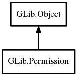

Permission
Object Hierarchy:
Description:
A Permission represents the status of the caller's permission to perform a certain action.
You can query if the action is currently allowed and if it is possible to acquire the permission so that the action will be allowed in the future.
There is also an API to actually acquire the permission and one to release it.
As an example, a Permission might represent the ability for the user to write to a Settings object. This Permission object could then be used to decide if it is appropriate to show a "Click here to unlock" button in a dialog and to provide the mechanism to invoke when that button is clicked.
All known sub-classes:

Namespace: GLib
Package: gio-2.0
Content:
Properties:
Creation methods:
Methods:
Inherited Members:
All known members inherited from class GLib.Object